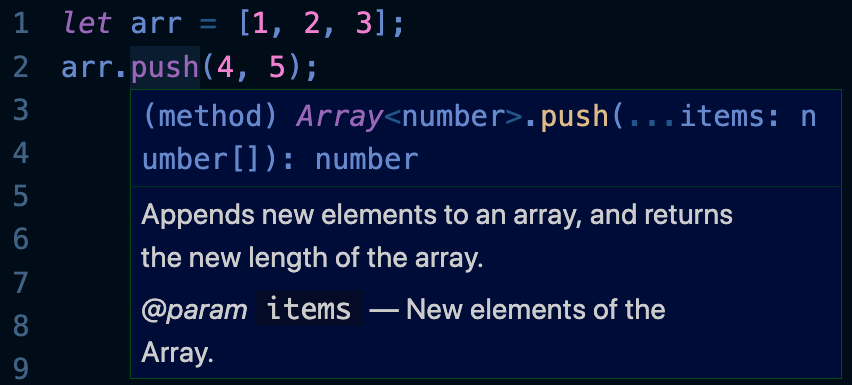

This lesson will go over loops, arrays, variable declaration keywords, if statements, and functions/methods.
A note: capitalization is very important in JavaScript. Keywords like var and while must have the proper capitalization, which is all lower-case in this case. If your code is giving you errors or is not working, make sure you have the right capitalization.
Common practice for variable names is to use camel casing, or capitalizing the
beginning of every word except the first, like this: exampleVariableName. Another thing to
note is that the first character
of a variable name cannot be a number, and variable names cannot include spaces.
Loops are used when you want to repeat a specific section of code multiple times. Loops run while the condition is true and end when the condition is detected as false at the start of a loop.
While loops are one kind of loop with this syntax:
while ([condition is true]) {
[run this section of code]
}
This is an example:
let i = 0;
while (i < 10) {
console.log(i);
i++;
}
In English, this loop means "While the variable i is less than 10, log i to the
console and increment i by
1". This means that the loop will run 10 times and print the numbers 0 through 9 to the console. The loop
will not print the 10 to the console, because 10 is not less than 10, so the condition is false
and the loop
ends. If we wanted to include 10 in the loop we could have made the condition i <= 10, or
i is less than
or equal to 10. Here is a list of important comparison operators in JS:
| > | Greater than |
| < | Less than |
| >= | Greater than or equal to |
| <= | Less than or equal to |
| == | Is equal |
| === | Is equal (strict type) |
| != | Is not equal |
| !== | Is not equal (strict type) |
Notice that the equality operators are not single equals signs because that is already the operator used to assign values to variables, the assignment operator.
You may have noticed that there are two equality operators, == and ===. The
difference is that the double equals sign operator tries to ignore the variable type of the values being
compared. For example, the expression
2 == "2" would return true. The triple equals sign operator takes type into
account, so 2 === "2" would return false. The same principle applies to the
inequality operators. So 2 != "2" would
return false, because this operator thinks that the values are equal, and inequality
operators only return true if the
two values are NOT equal. Likewise, 2 !== "2" would return true, because the
operator thinks that
2 and "2" are NOT equal.
To avoid bugs in your code, you should probably stick to using the strict equality and inequality
operators
=== and !==. The == and != operators may be useful
in specific cases.
These comparison operators only work on primitive values, not Objects, which we will discuss later. Any
comparison between Objects will return false.
Expressions using the comparison operators return as Booleans, either true or
false. Loops only run if the
condition is true at the start. If the condition is false, then the program moves
on to the next lines of
code after the loop.
A variant of the while loop is the do-while loop, which guarantees one loop through the code, then loops again for every time the condition is true. Here is the format:
do {
[run this section of code]
} while ([condition])
For example:
let i = 0;
do {
console.log(i);
i++;
} while(i < -1)
This will console log 0 once before the loop ends, even though the condition is never
true.
This may be useful occasionally.
A common structure for the while loop is defining an iterator variable, like i, before the
loop, then iterating that variable every loop, like in the first while loop example. This common structure
can be conveniently constructed in something called a for loop:
for ([initialize variable]; [condition]; [iteration]) {
[run this section of code]
}
You usually declare an iterator variable as the first statement, write the condition as the second statement, and iterate the variable in the third statement.
This is an example:
for (let i = 0; i < 10; i++) {
console.log(i);
}
This results in the same output as the first example while loop, but much more efficiently.
Note: you can put in any statement for the iteration, not just i++. Something like i +=
2 would also be valid, for example.
There are some other kinds of loops, but these are the most common.
Arrays let you stores multiple values in one place. Arrays are made up of elements surrounded by
square brackets, and the elements can be of any type.
Example:
let arr = [1, "string", true, 2];
Arrays can even store other arrays. And those arrays can store arrays, and so on. These are called
nested arrays.
let arr = [[1, 0, 1],
[0, 1, 0],
[1, 0, 1]];
Access array elements using bracket notation. Each element in an array is given a number, starting
with 0.
Access elements like this: arrayName[index]. For example:
let arr = [1, "string", true, 2];
console.log(arr[0]);
The output to the console would be the number 1, the first element in the array indicated by index 0. Index
1 would return "string", index 2 would return true, and index 3 would return
2.
In order to obtain the length of an array (or of a string), you can use the .length property.
For example, arr.length in the previous example would return 4, the length of the
array. Notice that the index of the last element in the array is the length of the array minus 1. So, you
can do arr[arr.length – 1] to get the last element of an array. You can use
arr[arr.length – 2] for the second to last element, etc.
To access nested arrays, simply add as many brackets as you need. For example:
let arr = [[1, 0, 1],
[0, 1, 0],
[1, 0, 1]];
console.log(arr[1][0]);
The first bracket [1] accesses the second element, [0, 1, 0], and the
[0] accesses the first element of that array, which is 0.
A triple-layer array would require three bracket indexes, etc.
Note: you can access strings the same way. Example:
let str = "Hello world!";
console.log(str[0]);
The result would be "H".
For loops can easily be used to visit every item in an array. For example:
let arr = [0, 1, 2, 3, 4, 5];
for (let i = 0; i < arr.length; i++) {
console.log(arr[i]);
}
This would print every element in the array.
Arrays with nested arrays can also be accessed with nested loops:
let arr = [[1, 0, 1],
[0, 1, 0],
[1, 0, 1]];
for (let i = 0; i < arr.length; i++) {
for (let j = 0; j < arr[i].length; j++) {
console.log(arr[i][j]);
}
}
This prints out every element in order. Notice for the inner loop, the length of the array elements have to
be accessed, which is why we access arr[i].length.
You could use these loops to manipulate the elements of arrays in some way.
You can add and remove array elements with methods, or sometimes referred to as functions. You use methods on variables using this syntax:
varName.functionName([parameters]);
Methods are called with a dot and take in parameters between the braces. Parameters are separated by commas. There could be any number of parameters and a varying amount depending on how the method is used. There could also be zero parameters with nothing between the braces.
For example, if we wanted to add an element to the end of an array, we would use the .push()
method. This method takes in any number of new elements separated by commas and appends them onto the end
of an array. For example:
let arr = [1, 2, 3];
arr.push(4, 5);
The resulting array stores [1, 2, 3, 4, 5]. The new elements have been appended to the end.
Methods also return potentially useful values. For example, the .push() method
returns the length of the new array. So, doing console.log(arr.push(4, 5)) in this instance
would output 5, because that is the new length of the array.
You can learn what any method returns by looking it up. Don't be afraid to look things up when coding! In addition, some IDEs, like VS Code, may tell you the nature of a method when you do something like hover over it with your mouse:

Similarly, you can remove an item from the end of an array with the .pop() method. This method
removes the last element of an array and returns that item.
let arr = [1, 2, 3, 4, 5];
let lastElement = arr.pop(); // lastElement is now 5
Know that you don't have to use methods on variables. Although using them with variables is usually most common, they work on anything of the right data type. This would also work:
let lastElement = [1, 2, 3, 4, 5].pop();
Here is a list of useful array methods. If you ever want to find a specific method, don’t be afraid to look up a description of what you want the method to do. You may find a new useful method!
.push() |
Adds an element to the end of the array |
.pop() |
Removes an element from the end of an array |
.unshift() |
Adds an element to the beginning of an array |
.shift() |
Removes an element from the beginning of an array |
.splice() |
Can be used to add and remove elements anywhere in the array |
.toString() |
Returns the array as a string |
Play with all these methods to really get a hang of them.
There are three variable declaration keywords in JavaScript: var, let, and
const.
To understand the difference between var and let, you need to understand the
concept of scope. Scope is basically the area of code that the variable can be accessed in, usually
surrounded in curly braces. For example:
// global scope outside any surrounding structure
var i = 0;
while (i < 10) {
// the scope of the while loop between the curly braces
i++;
}
var variables are always global variables (accessible anywhere) or scoped within a function
(which we will introduce later).
let variables are only accessible in the scope they were declared in and any scopes within that
scope.
I recommend only using let variables because they tend to cause fewer errors.
Variables declared with const cannot be reassigned to another value. Attempting to do so will
give you an error. They are constants, read-only variables. Other than that, they have the same properties
as let variables. You will commonly see constant variable names in all capital letters.
When you want code to do different things depending on the input, you use an if statement. Here is the syntax of a basic if statement:
if ([condition]) {
[run this code]
}
You can also have an else statement, which will only run if the condition is false.
if ([condition]) {
[run this code if the condition is true]
}
else {
[run this code if the condition is false]
}
You can also add else-if statements which check the condition if the previous condition was false:
if ([condition 1]) {
[run this code if condition 1 is true]
}
else if ([condition 2]) {
[run this code if condition 1 is false and condition 2 is true]
}
You link as many else-if statements as you want, and a simple else statement should be the last statement in the if chain. For example, here is an if statement that prints the letter grade corresponding to a number grade:
let letterGrade = 86;
if (letterGrade >= 90) {
console.log("A");
}
else if (letterGrade >= 80) {
console.log("B");
}
else if (letterGrade >= 70) {
console.log("C");
}
else if (letterGrade >= 60) {
console.log("D");
}
else {
console.log("F");
}
This should return "B".
The difference between a series of independent if statements and a chain of else-if statements is that after one of the else-if statements' condition is true and its code runs, no other else-if or else statement will run. Each in a series of if statements is checked and could run.
You can also use multiple conditions in a single if statement using the and operator
&& and or operator ||. Statements with the and operator return true if
both statements compared are true, and statements with the or operator return true if at least one of the
statements are true. Parentheses help decide which conditions to resolve first. For example:
let a = true;
let b = true;
let c = false;
consle.log(a || (b && c)); // this returns true
The b && c expression returns false because c is false.
However, since a is true, the whole expression is true because of the
or operator.
Something else to consider is that you can end a loop early with a break statement, most
effectively by
using an if statement. For example:
for (let i = 0, i < 10; i++) {
if (i === 5) {
break; // this ends the loop prematurely when i is 5
}
}
This may be useful in various circumstances.
When you want to reuse a certain block of code, you surround it in a function. Remember the array methods,
like .pop() and .push()? With functions, you can make your own reusable code!
Here is the syntax for writing a function:
function functionName([parameters]) {
[code]
}
The parameter parentheses can be left blank. Any parameters are separated with commas.
Let's write an example function – a function that returns the factorial of an integer. The factorial of an
integer is the product of the number and every positive integer fewer than it. For example, 4 factorial is
equal to 4
* 3 * 2 * 1 = 24. We can replicate this using a while loop. Try to figure this out for yourself first, then
look at one possible answer:
function factorial(num) {
let result = 1;
while (num > 0) {
result *= num;
num--;
}
return result;
}
This function only has one parameter: num. This function multiplies result by
num and all positive integers less than num. Note: the declared variables
result and num are only accessible within the function. You could declare other
variables called result and num in other functions with no issue. The function
returns the result with the return statement. If we do console.log(factorial(4)),
we should get the output 24.
Note: you can also do a return statement like return; and return nothing while ending the
function call.
You can also use default parameter syntax to set a default value for the parameters for when no parameter is passed in. Using the factorial example, if we wanted a default parameter of 1, we would write the syntax like this:
function factorial(num = 1) { // 1 is the default parameter
[code]
}
Now, if factorial was called with no parameters like this: factorial(), then the default value
for num would be 1.